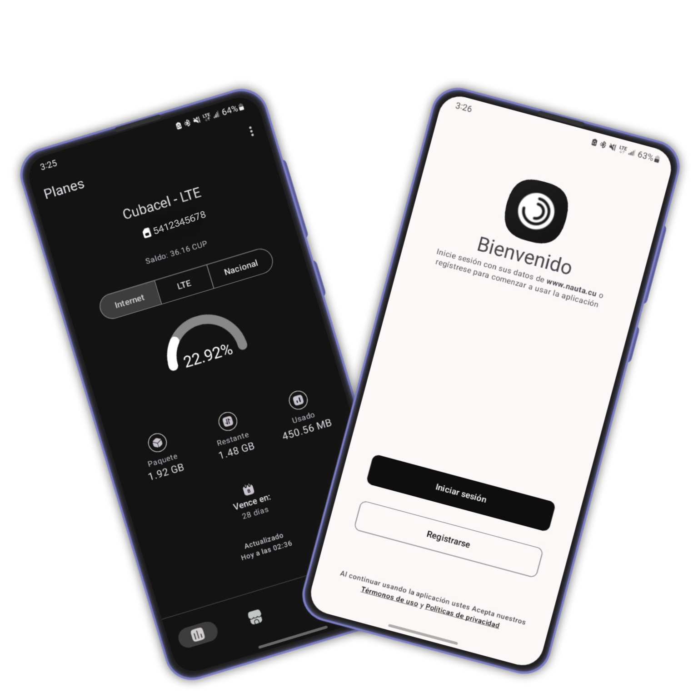

Experiencia
Con más de cinco años de experiencia en el desarrollo de aplicaciones móviles, hemos centrado nuestros esfuerzos en ofrecer soluciones que combinan utilidad y diseño moderno. Nos especializamos en el uso de las tecnologías más avanzadas disponibles en el mercado, garantizando a los usuarios productos completos, funcionales y de gran valor práctico.
Proyectos
Nos dedicamos a desarrollar herramientas digitales que impactan positivamente la vida diaria de los usuarios. Nuestro objetivo es facilitar y mejorar la experiencia de las personas a través de soluciones tecnológicas innovadoras y accesibles. Trabajamos con pasión y compromiso para identificar necesidades y transformarlas en productos que simplifican tareas cotidianas, aumentan la productividad y permiten un mayor control sobre su entorno digital. Creemos que la tecnología debe ser una aliada que potencie el bienestar y la eficiencia, por lo que nuestras soluciones están diseñadas para ser intuitivas, eficientes y centradas en el usuario.
Nuestros patrocinadores
¡Gracias por el apoyo!